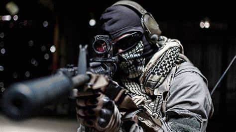

The multiplayer mode in Call of Duty: Ghosts features changes from previous Call of Duty games as some new mechanics have been added to it. Maps now have areas that can be altered or destroyed. There is a nuke-like kill streak reward, the KEM Strike. The player can get the ODIN kill streak by either getting a certain amount of kills or by killing the top player on the other team and then completing various challenges after picking up a blue briefcase that is dropped. The sniper rifle scopes also have new "dual render technology" allowing the player to see around the outside of the scope (although blurred) when zoomed in. On October 3, a new multiplayer type was revealed, called Squads. This features a squad that the player can build and the player can face other squads around the world. The player's squad can be leveled up and will act like a true individual. "Octane", "Prison Break", "Tremor", "Freight", "Stormfront", "Siege", "Warhawk", "Sovereign", "Overlord", "Flooded", "Strikezone", "Whiteout", "Stonehaven" and "Chasm" are the maps that are in Call of Duty: Ghosts so far. The dynamic map, "Free Fall", was a pre-order bonus. The game now features playable female soldiers.
Call of Duty: Ghosts is set in the near future that follows the nuclear destruction of the Middle East. The oil-producing nations of Latin America form the Federation of the Americas in response to the ensuing global economic crisis and quickly grow into a global superpower, swiftly invading and conquering Central America, the Caribbean, and Mexico.
Despite shipping $1 billion worth of units to retail channels within 24 hours of the game's launch, overall sales were down compared to 2012's Call of Duty: Black Ops II. Activision blamed the fall in demand on uncertainty caused by the upcoming transition to eighth generation consoles. As of February 2014, the game has sold over 19 million copies in physical retail.